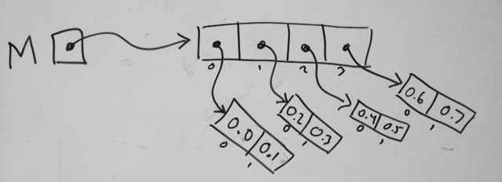

Homework 25: 2D arrays and sorting practice
Name: _____________________________________________ Alpha: ___________________
Describe help received: ________________________________________________________
- Due before class on Friday, March 24
- This homework contains code to be submitted electronically.
Put your code in a folder called
hw25and submit using the204subcommand. - This is a written homework - be sure to turn in a hard-copy
of your completed assignment before the deadline. Use the
codeprintcommand to print out your code and turn that in as well.
Assignment
-
Circle one to indicate how you did for the reading assignment from
Homework 23 before class on Monday:
How carefully did you complete the reading? (Circle one)
Not at allSkimmed itRead someRead all -
Circle one to indicate how you did for the reading assignment from
Homework 24 before class on Wednesday:
How carefully did you complete the reading? (Circle one)
Not at allSkimmed itRead someRead all - Given the following definitions:
fill in the following table with the type (only) of each expression. Write ERROR for both if the expression would be a compiler or run-time error.double x; char* s; double* A; int** M; char** W;expression type (or ERROR) xsAMWx[0]s[0]A[0]M[0]W[0]x[0][0]s[0][0]A[0][0]M[0][0]W[0][0] -
Write the code that would define (that means, declare, allocate, and initialize)
the 2D array of `double`s shown in the following diagram:
 -
Download the program hw25.c as well as the file
letters.txt that it uses. Compile and run the program
to understand what it does.
Note that this program uses the fgetc function from
stdin.h, which reads in a single character (including whitespace) from an open file.Your task is just to simplify this program! Make some functions, avoid repeated code, and combine things so that the program is well-structured, easy to understand, and easy to maintain or modify. Submit your updated version as
hw25.txt. - Write a program
oddfirst.cthat reads 10 positive ints from the user and prints them into order so that all the odd numbers come first (in increasing size) followed by all the even numbers (in increasing size).There is a "good" way to do this, and (many) "ugly" ways to do it. Do it the good way!
For example:
roche@ubuntu$./oddfirst18 2 7 14 29 3 5 8 16 113 5 7 11 29 2 8 14 16 18